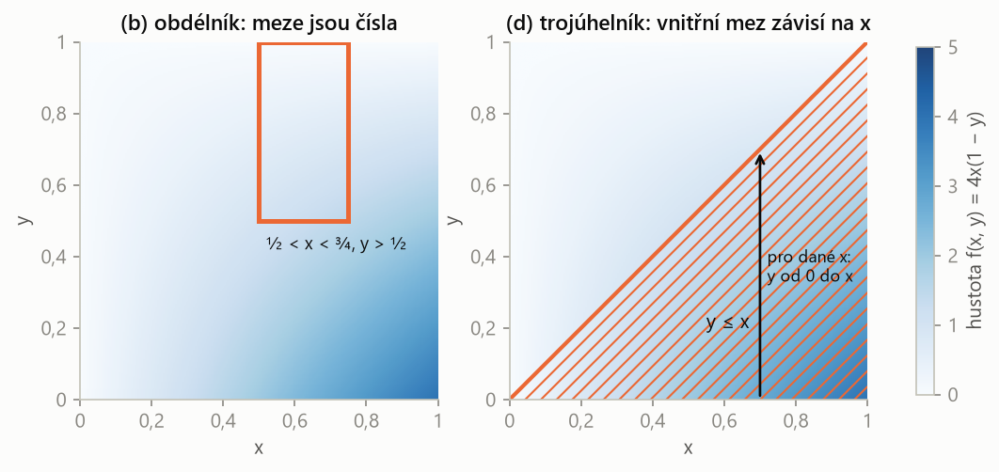

PSO – příprava na zkoušku · Náhodný vektor – PSO · https://balnerm.github.io/pripravy/pso/08_nahodny_vektor.html
Kapitola 8
Náhodný vektor
Často měříme dvě veličiny najednou – výšku a hmotnost, napětí a proud. Náhodný vektor (X, Y) popisuje jejich společné chování. Pravděpodobnost se teď počítá jako objem pod sdruženou hustotou nad oblastí v rovině, tedy dvojným integrálem. Klíčová dovednost je správně nastavit meze. To je úloha S6/5.
Sdružené rozdělení
Náhodný vektor (X, Y) je dvojice náhodných veličin definovaných na stejném pokusu. Jeho sdružená distribuční funkce je
\[ F(x, y) = p(X < x,\; Y < y). \]jeden pokus, dvě čísla. Čárka v \(p(X < x, Y < y)\) znamená „a současně“ (průnik jevů).
Spojitý náhodný vektor má sdruženou hustotu \(f(x, y) \ge 0\), jestliže pro každou oblast \(G\) v rovině
\[ \begin{aligned} p\big((X, Y) \in G\big) &= \iint_G f(x, y)\, dx\, dy \\ \iint_{\mathbb{R}^2} f(x, y)\, dx\, dy &= 1 \end{aligned} \]„krajina“ nad rovinou xy, jejíž celkový objem je 1. Pravděpodobnost, že bod (X, Y) padne do oblasti G, je objem krajiny nad G.
U diskrétního vektoru je místo hustoty tabulka sdružené pravděpodobnostní funkce \(p(x_i, y_j) = p(X = x_i, Y = y_j)\), jejíž hodnoty dávají součet 1.
Marginální rozdělení a nezávislost
Marginální hustoty spojitého vektoru (X, Y) se sdruženou hustotou f jsou
\[ \begin{aligned} f_X(x) &= \int_{-\infty}^{\infty} f(x, y)\, dy \\ f_Y(y) &= \int_{-\infty}^{\infty} f(x, y)\, dx \end{aligned} \]rozdělení jedné veličiny, když o druhé nic nevíme: druhou proměnnou „vyintegrujeme“ (u tabulky sečteme řádek či sloupec – součty se píšou na okraj, latinsky margo).
Veličiny X, Y jsou nezávislé, jestliže \(F(x, y) = F_X(x)\,F_Y(y)\) pro všechna x, y; u spojitého vektoru ekvivalentně
\[ f(x, y) = f_X(x)\, f_Y(y). \]sdružená hustota se „rozpadne“ na součin funkce jen x a funkce jen y (a oblast je obdélník). Pak hodnota jedné veličiny nic neříká o druhé.
| Y = 0 | Y = 1 | \(p_X\) | |
|---|---|---|---|
| X = 0 | 0,1 | 0,3 | 0,4 |
| X = 1 | 0,2 | 0,4 | 0,6 |
| \(p_Y\) | 0,3 | 0,7 | 1 |
Marginální rozdělení jsou součty řádků a sloupců. Nezávislost by vyžadovala \(p(0, 0) = p_X(0)\,p_Y(0)\), ale \(0{,}4 \cdot 0{,}3 = 0{,}12 \ne 0{,}1\) – veličiny jsou závislé.
Pravděpodobnost oblasti: dvojný integrál
Poznáš to: random vector (X, Y), simultaneous density function f(x, y), otázka na \(p(\ldots X \ldots, \ldots Y \ldots)\) nebo \(p(Y \le X)\).
- Nakresli oblast, kde je \(f \ne 0\), a oblast z otázky; integruje se přes jejich průnik.
- Obdélník (podmínky zvlášť na X a zvlášť na Y): meze jsou čísla; vnitřní a vnější integrál jdou v libovolném pořadí.
- Oblast s podmínkou mezi X a Y (např. \(Y \le X\)): vnější proměnná má číselné meze, vnitřní mez je funkce vnější („pro dané x jde y od 0 do x“).
- Spočítej vnitřní integrál (druhá proměnná je konstanta), pak vnější.
- Kontrola: výsledek mezi 0 a 1; případně spočítej v opačném pořadí integrace.
Náhodný vektor (X, Y) má sdruženou hustotu \(f(x, y) = 4x(1 - y)\) na jednotkovém čtverci \(\langle 0, 1\rangle^2\), jinde 0. Urči:
- marginální hustoty,
- \(p(\tfrac12 < X < \tfrac34,\ Y > \tfrac12)\),
- \(p(X \le \tfrac12,\ Y > \tfrac12)\),
- \(p(Y \le X)\).
Řešení krok po kroku
(a) Marginální hustoty pro \(x, y \in \langle 0, 1\rangle\) (jinde 0):
\[ \begin{aligned} f_X(x) &= \int_0^1 4x(1 - y)\, dy \\ &= 4x\left[y - \frac{y^2}{2}\right]_0^1 = 2x \end{aligned} \] \[ \begin{aligned} f_Y(y) &= \int_0^1 4x(1 - y)\, dx \\ &= (1 - y)\left[2x^2\right]_0^1 = 2 - 2y \end{aligned} \]Všimni si: \(f_X(x)\,f_Y(y) = 2x \cdot 2(1-y) = f(x, y)\), takže X a Y jsou nezávislé.
(b) Obdélník \(\tfrac12 < x < \tfrac34\), \(\tfrac12 < y < 1\):
\[ \begin{aligned} p &= \int_{1/2}^{3/4}\int_{1/2}^{1} 4x(1 - y)\, dy\, dx \\ &= \int_{1/2}^{3/4} 4x \cdot \frac{1}{8}\, dx \\ &= \left[\frac{x^2}{4}\right]_{1/2}^{3/4} = \frac{5}{64} \end{aligned} \]Díky nezávislosti jde i rychleji jako součin:
\[ \begin{aligned} p &= \int_{1/2}^{3/4} 2x\, dx \cdot \int_{1/2}^{1} (2 - 2y)\, dy \\ &= \frac{5}{16} \cdot \frac{1}{4} = \frac{5}{64} \end{aligned} \](c) Obdélník \(0 \le x \le \tfrac12\), \(\tfrac12 < y < 1\):
\[ \begin{aligned} p &= \int_{1/2}^{1}(1 - y)\left[2x^2\right]_0^{1/2} dy \\ &= \frac{1}{2}\int_{1/2}^{1}(1 - y)\, dy = \frac{1}{2} \cdot \frac{1}{8} = \frac{1}{16} \end{aligned} \](d) Oblast \(y \le x\) je trojúhelník pod úhlopříčkou. Pro dané x jde y od 0 do x:
\[ \begin{aligned} p(Y \le X) &= \int_0^1\int_0^x 4x(1 - y)\, dy\, dx \\ &= \int_0^1 4x\left(x - \frac{x^2}{2}\right) dx \\ &= \int_0^1 \left(4x^2 - 2x^3\right) dx \\ &= \frac{4}{3} - \frac{1}{2} = \frac{5}{6} \end{aligned} \]Kontrola opačným pořadím (pro dané y jde x od y do 1):
\[ \begin{aligned} &\int_0^1\int_y^1 4x(1 - y)\, dx\, dy \\ &\quad = \int_0^1 2(1 - y)(1 - y^2)\, dy = \frac{5}{6} \end{aligned} \]
U obdélníku jsou meze obou integrálů čísla. U trojúhelníku \(y \le x\) se pohybuje svislá šipka: pro každé x jde y jen od 0 do úhlopříčky, proto je vnitřní horní mez x. Hustota je největší vpravo dole, kde leží i většina trojúhelníku – proto vyšlo 5/6 > 1/2.
Vnější integrál musí mít čísla, vnitřní smí mít funkci vnější proměnné – nikdy naopak. Kdo napíše \(\int_0^x \int_0^1 \ldots\), dostane výsledek, ve kterém zbude x, a to u pravděpodobnosti nemůže být.
Kovariance a korelace
Kovariance veličin X, Y je
\[ \begin{aligned} \operatorname{cov}(X, Y) &= E\big[(X - EX)(Y - EY)\big] \\ &= E(XY) - EX \cdot EY \end{aligned} \]zda veličiny rostou spolu (kladná), proti sobě (záporná), nebo spolu lineárně nesouvisí (nulová). Pro nezávislé veličiny je nulová.
Korelační koeficient je
\[ \rho(X, Y) = \frac{\operatorname{cov}(X, Y)}{\sqrt{DX}\,\sqrt{DY}}, \qquad -1 \le \rho \le 1. \]kovariance zbavená jednotek. \(\rho = \pm 1\): body leží přesně na přímce; \(\rho = 0\): žádná lineární závislost (nějaká jiná být může).
| \(\operatorname{cov}(X, Y)\) | pro nezávislé veličiny 0, pak se rozptyly prostě sčítají – to využívá centrální limitní věta |
Nezávislé veličiny mají vždy kovarianci 0. Obráceně to neplatí: je-li X symetrické kolem 0 a \(Y = X^2\), je \(\operatorname{cov}(X, Y) = 0\), a přitom Y je X úplně určené.
„Náhodný vektor (X, Y) je dvojice veličin z jednoho pokusu. Spojitý vektor má sdruženou hustotu f(x, y) s celkovým objemem 1 a pravděpodobnost oblasti je dvojný integrál hustoty přes tuto oblast. Marginální hustotu jedné veličiny dostanu vyintegrováním druhé proměnné. Veličiny jsou nezávislé, právě když se sdružená hustota rovná součinu marginálních. Lineární vztah měří kovariance a korelační koeficient.“
Dvě veličiny: pravděpodobnost = objem pod sdruženou hustotou; marginální = vyintegruj druhou proměnnou; nezávislé = hustota je součin marginálních.
| česky | anglicky |
|---|---|
| náhodný vektor | random vector, two-dimensional random variable |
| sdružená hustota | joint (simultaneous) density function |
| sdružená distribuční funkce | joint distribution function |
| marginální hustota / rozdělení | marginal density / distribution |
| nezávislé veličiny | independent random variables |
| dvojný integrál | double integral |
| kovariance | covariance |
| korelační koeficient | correlation coefficient |
| jinde (mimo oblast) | otherwise |
Fráze ze zadání: has a continuous distribution determined by simultaneous density function = má spojité rozdělení se sdruženou hustotou; on ⟨0, 1⟩ × ⟨0, 1⟩ = na jednotkovém čtverci; p(Y ≤ X) = pravděpodobnost, že Y nepřevýší X.
Shrnutí
Náhodný vektor popisuje dvě veličiny měřené současně. Spojitý vektor má sdruženou hustotu – nezápornou funkci dvou proměnných s celkovým objemem 1 – a pravděpodobnost, že bod padne do oblasti, je dvojný integrál hustoty přes ni. Při výpočtu se oblast nakreslí: u obdélníku jsou meze čísla, u oblasti s podmínkou mezi x a y závisí vnitřní mez na vnější proměnné. Marginální hustota vznikne vyintegrováním druhé proměnné; když je sdružená hustota součinem marginálních, jsou veličiny nezávislé. Lineární souvislost měří kovariance a korelační koeficient.
Take-home messages
- Pravděpodobnost oblasti = dvojný integrál sdružené hustoty přes průnik oblasti a nosiče.
- Vždy nakresli oblast; vnější meze čísla, vnitřní smí záviset na vnější proměnné.
- Marginální hustota: integrál přes druhou proměnnou (u tabulky součet řádku/sloupce).
- Nezávislost: \(f(x, y) = f_X(x) f_Y(y)\); pak se pravděpodobnost obdélníku rozpadne na součin.
- Nezávislé ⇒ cov = 0, ale cov = 0 nezávislost nezaručuje.
Otázky ke zkoušce
Co je sdružená hustota a jak z ní spočítáte pravděpodobnost?
Nezáporná funkce f(x, y) s celkovým integrálem 1, která popisuje rozdělení spojitého vektoru (X, Y). Pravděpodobnost, že (X, Y) padne do oblasti G, je \(\iint_G f(x, y)\,dx\,dy\) – objem pod hustotou nad G.
Jak získáte marginální hustotu z hustoty sdružené?
Integrací přes druhou proměnnou: \(f_X(x) = \int f(x, y)\,dy\), \(f_Y(y) = \int f(x, y)\,dx\). U diskrétního vektoru sečtu řádek, resp. sloupec tabulky.
Kdy jsou dvě náhodné veličiny nezávislé?
Když se sdružené rozdělení rozpadne na součin marginálních:
- obecně \(F(x, y) = F_X(x)\,F_Y(y)\) pro všechna x, y;
- u spojitého vektoru \(f(x, y) = f_X(x)\,f_Y(y)\);
- u diskrétního \(p(x_i, y_j) = p_X(x_i)\,p_Y(y_j)\) pro všechny dvojice.
Jak nastavíte meze dvojného integrálu pro p(Y ≤ X) na jednotkovém čtverci?
Oblast je trojúhelník pod úhlopříčkou. Vnější proměnná x jde od 0 do 1, pro dané x jde y od 0 do x: \(\int_0^1 \int_0^x f\,dy\,dx\). Ekvivalentně y od 0 do 1 a x od y do 1.
Co je kovariance a korelační koeficient?
\(\operatorname{cov}(X, Y) = E(XY) - EX\,EY\) měří, zda veličiny kolísají spolu, nebo proti sobě. Korelační koeficient \(\rho = \operatorname{cov}/(\sigma_X \sigma_Y)\) je bezrozměrný, leží v ⟨−1, 1⟩ a měří sílu lineárního vztahu.
Plyne z nulové kovariance nezávislost?
Ne. Nezávislost dává nulovou kovarianci, ale nulová kovariance znamená jen, že chybí lineární vztah. Příklad: X symetrické kolem 0, \(Y = X^2\) – kovariance je 0, ale Y je plně určeno X.